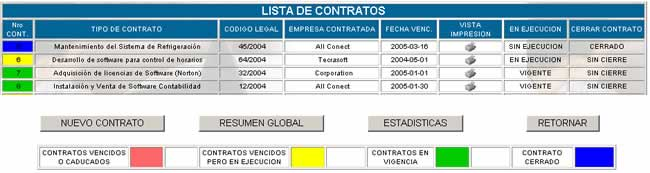
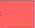
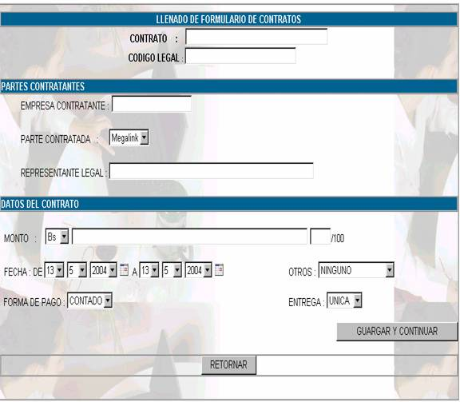
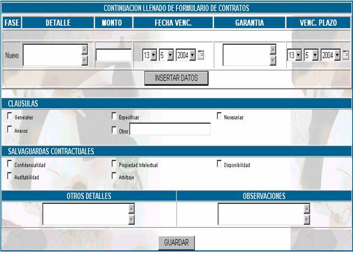

CONTRATOS
Visualizará la lista de contratos
realizados:

N° de Cont.; indica con que número de contrato estamos trabajando y según el color
que tenga nos indica lo siguiente :
Contrato vencido o caducado 
Contrato vencido pero en ejecución
Contrato en Vigencia
Contrato Cerrado
Tipo de contrato; indica con qué clase de contrato estamos trabajando,
pudiendo ser éste un contrato de bienes, servicios, mantenimiento,
informático, etc.
Código Legal; para mantener un control, se debe asignar un número
de código para cada contrato. Para un mejor control de la numeración, ésta
debe ser correlativa, tener por lo menos tres dígitos seguido de un slash
y dos dígitos para identificar la gestión, como por ejemplo: "CODIGO:
001/04". Que nos indica que es el contrato No. 001, realizado en la gestión
2004.
Empresa Contratada; indica el nombre de la empresa que hizo el contrato.
Fecha Venc;
indica la fecha en la que
el contrato se vence
- Tamaño: oficio (216 mm x 356 mm)
- Tipo: bond
- Color: blanco
- Peso 0.75 grs.
En
ejecución;
Indica el estado en el que se encuentra
el contrato, de forma equivalente al código de colores mostrados arriba.
Nuevo
Contrato
Al
hacer click sobre este botón usted podrá crear un
nuevo contrato, en la siguiente pantalla:

Donde
deberá llenar los siguientes campos:
Contrato; colocar la designación o nombre del contrato.
Código Legal; se debe asignar
un número de código para cada contrato.
Empresa Contratante; es el nombre
de su Institución.
Parte Contratada; es el nombre
del proveedor.
Representante Legal; la
contraparte del contrato; especificando nombre y apellido en base a poder especial
que acredite ser representante legal.
Monto; seleccionar
el tipo de moneda: Bolivianos o Dólares, aclarando a continuación el monto
literalmente.
Fecha; se debe llenar desde cuando entra
en vigencia el contrato, hasta la fecha de su conclusión.
Otros; seleccionar
si el contrato tiene Reconocimiento de Firmas o ha sido Protocolizado ante
un Notario de Fé Pública.
Forma
de Pago; de igual manera, escoger si el pago ha sido al contado
o es a Crédito.
Entrega; finalmente, escoger el
campo que corresponda, si la entrega del bien o servicio es única o se realizará
por fases.

En
caso de hacerse la entrega del bien o servicio por fases, se debe llenar la
parte donde dice detalle, monto, fecha de vencimiento, garantía y vencimiento
del plazo, en la siguiente pantalla.
La
parte de fases sólo será posible llenar en caso de que la elección
de la anterior pantalla, en el campo entrega, sea por fases
Cláusulas; a continuación, para un mejor control del contenido
del contrato, clickear si el contrato contiene las
cláusulas generales, específicas, necesarias, otros (Véase manual de procedimientos
de contratos de tecnologia)
Salvaguardas Contractuales; a fin de
controlar las salvaguardas contractuales, tickear las
que correspondan y contenga el contrato, según sea el caso.
Otros Detalles; si existieran algunos otros detalles que se
considere tomarlos en cuenta por la importancia que estos revistan,
especificarlos en esta casilla.
Observaciones; en caso de existir alguna observación sobre todo
respecto al control o cumplimiento de alguna de las fases o alguna falencia del
contrato, especificar brevemente en esta casilla.
Resumen
Global
Al hacer click sobre este
botón Usted podrá visualizar la siguiente pantalla:

Donde
encontrará los siguientes campos:
Descripción ; especifica
el tipo de contrato, en base a la clasificación de contratos.
Código ; en el que señala
el número de código asignado en el encabezado de la Ficha Legal.
Plazo ; señala en
esta casilla el tiempo de duración del contrato.
Fecha Venc.; fecha de Vencimiento
del contrato. Dato que nos ayudará a tener en cuenta la fecha de cumplimiento
del contrato para su control respectivo.
Fases ; especifica
en cuántas fases se realiza el contrato.
Garantía ; en caso de
existir alguna garantía establecida en el contrato está marcada como un check.
Venc. Plazo; especifica la fecha de vencimiento de la garantía
ofrecida por la parte contratada.
Observaciones; especifica, si se hizo
referencia en algún punto.
Mustra un cuadro estadístico de los contrados
en función de los estados en el se encuentran.
Con
el botón retornar puede volver al listado de contratos.